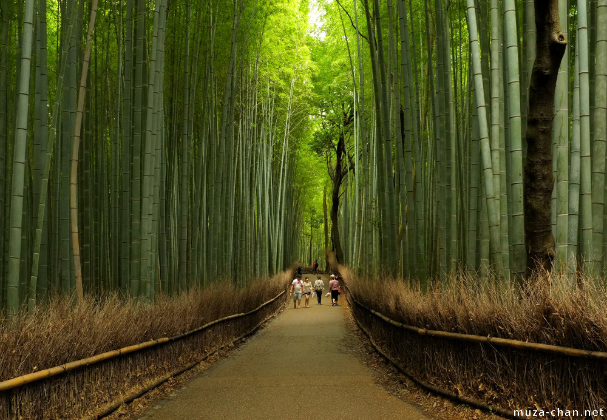

La forêt de bambous d’Arashiyama

Située à l’ouest de Kyoto, la forêt de bambous d’Arashiyama est l’un des paysages les plus emblématiques du Japon. En empruntant ses sentiers paisibles, les visiteurs se retrouvent entourés de milliers de bambous élancés qui s’élèvent vers le ciel, filtrant la lumière et créant une atmosphère à la fois mystérieuse et apaisante.
Le bruissement du vent dans les tiges de bambou, reconnu comme l’un des 100 paysages sonores du Japon, offre une expérience sensorielle unique, propice à la contemplation et à la sérénité. La promenade traverse un cadre naturel préservé, à proximité de temples traditionnels et de villas historiques, témoignant de l’harmonie entre nature et culture japonaise.
Lieu incontournable de Kyoto, la forêt de bambous d’Arashiyama invite à une parenthèse hors du temps, idéale pour découvrir la beauté, le calme et la poésie des paysages japonais.